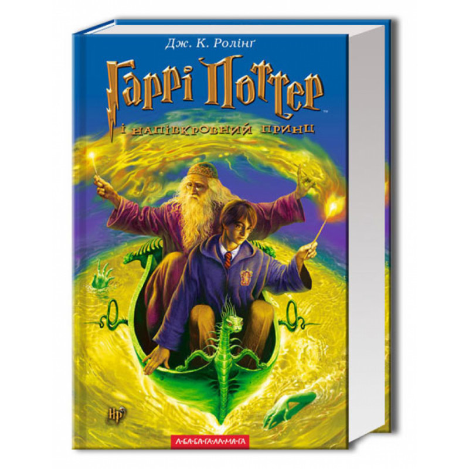
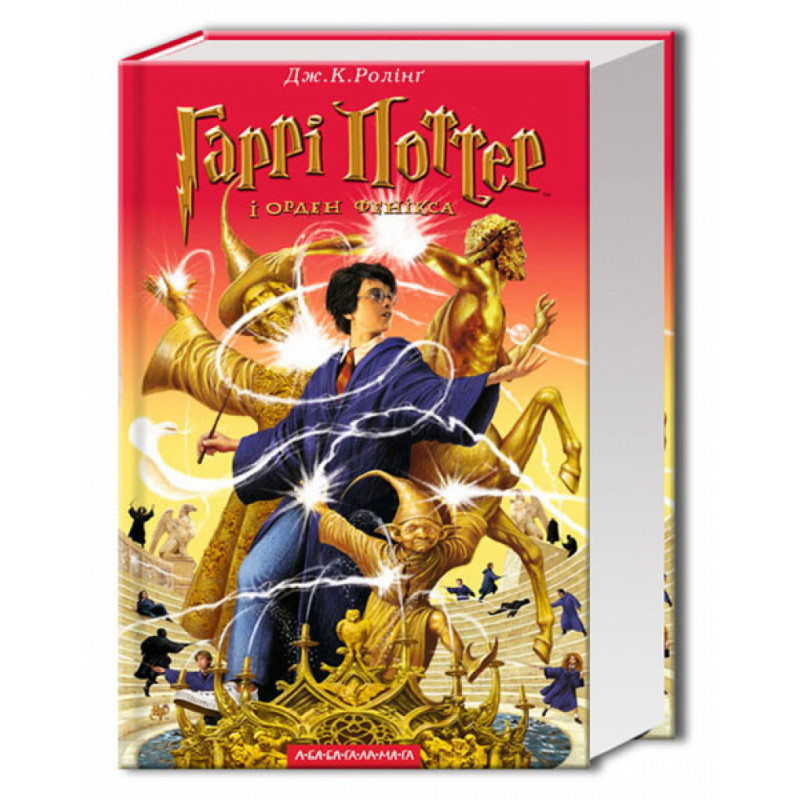
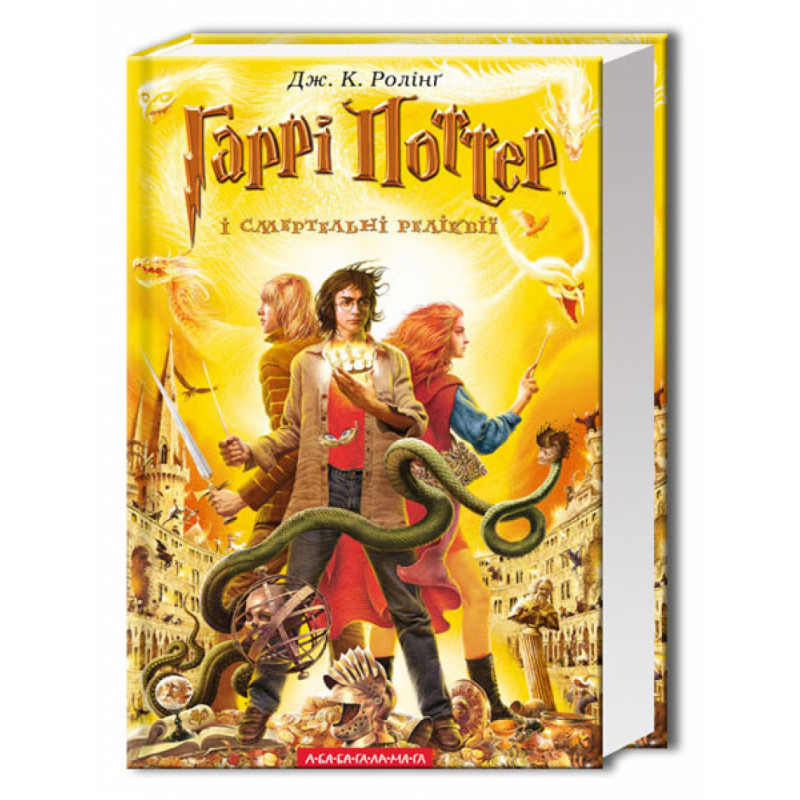
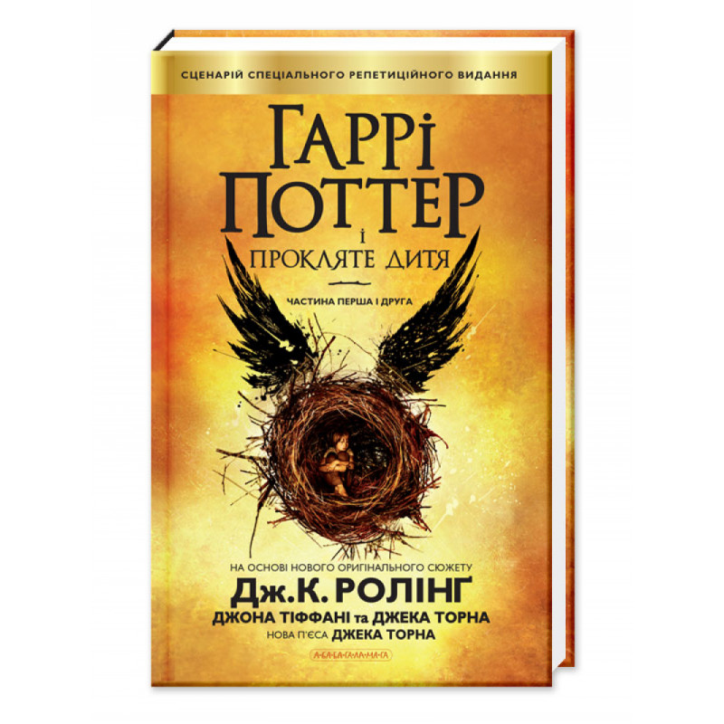
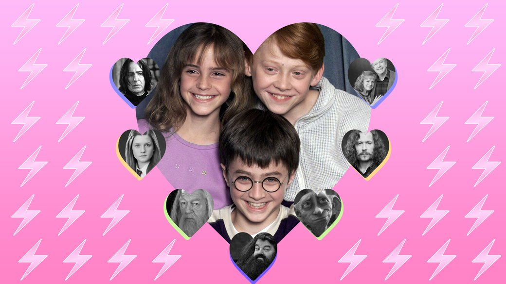
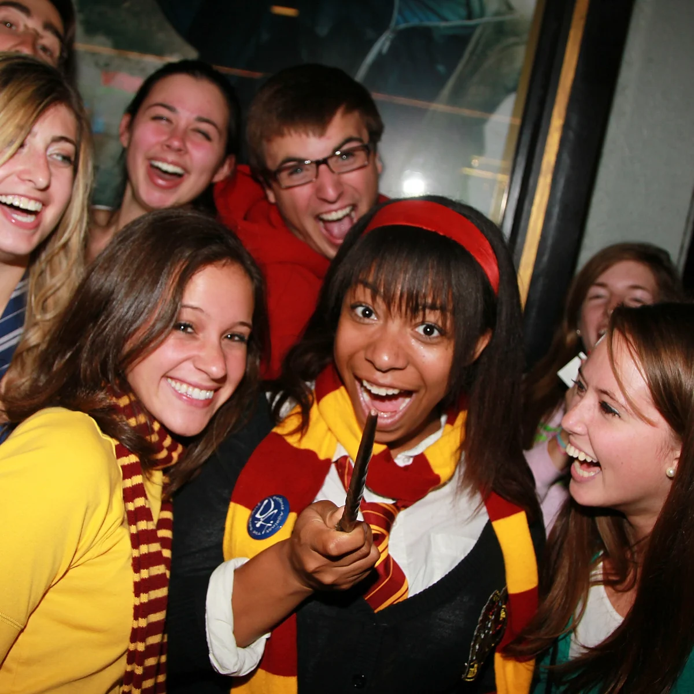
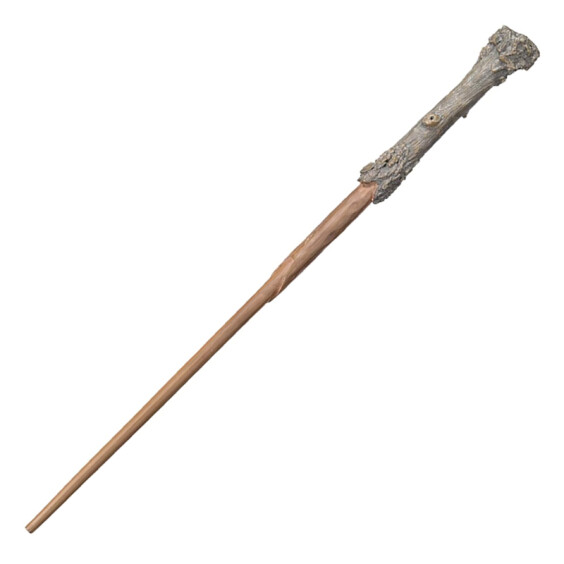

Гаррі Поттер філософський камінь -
950 UAH; Гаррі Поттер таємна кімната - 950 UAH; Гаррі Поттер в’язень Азкабану - 1000 UAH; Гаррі Поттер Келих Вогню - 1200 UAH;
   
Гаррі Поттер і напівкровний Принц - 400 UAH; Гаррі Поттер і Смертельні реліквії - 350 UAH; Гаррі Поттер і прокляте дитя - 320 UAH;
«Harry Potter and the Sorcerer's Stone» — перший роман серії «Гаррі Поттер» британської письменниці Дж. К. Ролінґ. Опублікований 30 червня 1997 року видавництвом «Блумсбері Паблішинґ» у Лондоні.
В 2001 році було випущено однойменний художній фільм на основі роману.«Га́ррі По́ттер і філосо́фський ка́мінь» Станом на серпень 2007 року книга займала друге місце у списку бестселерів
усіх часів серед творів художньої літератури нерелігійної та
неполітичної тематики (поступаючись лише «Дону Кіхоту» Мігеля де Сервантеса).
«Га́ррі По́ттер і тає́мна кімна́та» — другий роман серії «Гаррі Поттер» британської письменниці Дж. К. Ролінґ.
Опублікований 2 липня 1998 року видавництвом «Блумсбері Паблішинґ» у Лондоні. У 2002 році на основі роману знято однойменний художній фільм.
Українською мовою роман перекладений Віктором Морозовим і опублікований видавництвом А-ба-ба-га-ла-ма-га 2 травня 2002 року.
«Гаррі Поттер і в'язень Азкабану» — третій роман серії «Гаррі Поттер» британської письменниці Дж. К. Ролінґ. Опублікований 8 липня 1999 року
видавництвом «Блумсбері Паблішинґ» у Лондоні. У 1999 році отримав дві літературні премії: «Вайтбред (Коста)» і «Премію Брема Стокера», а також був номінований на кілька інших премій, внаслідок чого
визнаний одним з найвидатніших творів у жанрі «фентезі» за останні роки.
У 2004 році на основі роману знято однойменний художній фільм. Українською мовою роман перекладений Віктором Морозовим і опублікований видавництвом «А-БА-БА-ГА-ЛА-МА-ГА» 10 травня 2002 року.
«Га́ррі По́ттер і ке́лих вогню́» — четвертий роман серії «Гаррі Поттер» британської письменниці Дж. К. Ролінґ. Опублікований
8 липня 2000 року видавництвом «Блумсбері Паблішинґ» у Лондоні.
Вихід книги супроводжувався широкою рекламною кампанією і ажіотажем у колах читачів; цікавість аудиторії була, зокрема, стимульована попередженням авторки, що одного з персонажів буде вбито.
За обсягом «Келих вогню» значно перебільшує попередні частини серії. Обсяг наступних романів є більшим або приблизно дорівнює обсягові четвертого тому.
У 2000 році роман було нагороджено премією «Г'юґо».
«Га́ррі По́ттер і О́рден Фе́нікса» — п'ятий роман серії «Гаррі Поттер» британської письменниці Дж. К. Роулінґ.
Опублікований 21 червня 2003 року видавництвом «Блумсбері Паблішинґ» у Лондоні. Однойменний художній фільм вийшов у 2007 році.
«Га́ррі По́ттер і напівкро́вний Принц» — шостий роман серії «Гаррі Поттер» британської письменниці Дж. К. Ролінґ.
Опублікований 16 липня 2005 року видавництвом «Блумсбері Паблішинґ» у Лондоні. Протягом першої доби від моменту релізу книги було продано дев'ять мільйонів примірників.
Цим було встановлено рекорд, перевершений тільки наступною книгою серії — «Гаррі Поттер і смертельні реліквії» у 2007 році.
«Га́ррі По́ттер і смерте́льні релі́квії» — сьомий роман серії «Гаррі Поттер» британської письменниці Дж. К. Ролінґ.
Опублікований 21 липня 2007 року видавництвом «Блумсбері Паблішинґ» у Лондоні. Роман завершує серію, публікація якої тривала 10 років (1997—2007).
Однак у 2015 році було оголошено про вихід нової, восьмої книги про Гаррі Поттера «Гаррі Поттер і прокляте дитя».
Як і чому книжки про Гаррі Поттера роблять нас кращими.

Науково доведено, що історії про найвідомішого хлопчика-чаклуна позитивно впливають на психіку людини. Не вірите? Ми переконаємо вас у цьому всього за кілька хвилин.
Минуло більше 20 років від моменту, як світ побачила перша книжка Джоан Ролінґ про маленького чарівника Гаррі Поттера. Але магічний світ,
створений письменницею, продовжує впливати на світ реальний. Світ очікує на продовження серії фільмів "поттеріани" (чергову частину "Фантастичних звірів та місць їх перебування"). А старі книжки про Гаррі
не втрачають своєї популярності та актуальності серед різної за віком аудиторії. Ми спробували розібратись, які ж такі чарівні компоненти й інгредієнти містять ці оповідки — і як вони роблять нас краще,
навчаючи мистецтва співпереживання.
Жив собі в Туманному Альбіоні хлопчина-сирота. Життя його було не надто приємним (нестерпні родичі, дивний шрам на лобі), але якось воно тягнулось, аж поки на 11-й день народження Гаррі
не дізнався, що має магічні здібності. Розвивати ці здібності він поїхав у спецшколу і загалом дорослішав, як звичайний підліток: перші стосунки, конфлікти, загальні неврози.
Менш звичайною була багаторічна запекла битва хлопця з могутнім психопатом-чаклуном на ім’я Волдеморт, зацикленим на вбивствах "невірних" (винищенні усіх "бруднокровок") та
встановленні диктаторського режиму "поліцейської держави" із собою на чолі. Усі ми знаємо цю історію, незалежно від віку, адже більше 450 мільйонів проданих книжок свідчать про те, що пригодами Гаррі Поттера
зачитувались (і зачитуються) не лише діти, а й дорослі. Але, як це часто буває із чимось популярним, спочатку до "поттеріани" деякі соціальні групи ставились погано. Скажімо, різні християнські общини
звинувачували Джоан Ролінґ, що її книжки нібито пропагують язичництво та чаклунство серед дітлахів. Літературні критики часто наголошували на тому, що популярність Поттера серед дорослих — "погана ознака
культурного інфантилізму", адже боротьба "добра і зла" в книжках надмірно спрощена: Гаррі Поттер та його вірні друзі проти темних чаклунів. Та і врешті-решт, що ж це за Гоґвортс такий, де приймають і
цінують лише за вродженими талантами (якщо не народився чарівником, то тобі там не місце)?
Потім почали виходити екранізації книжок Джоан Ролінґ — і, по-перше, цій навалі було дедалі важче протистояти,
а по-друге, після настороженного сприйняття стало зрозуміло і навіть очевидно, що "поттеріана" — важливий культурний феномен,
який насправді може зробити цей світ трошки кращим. Достатньо подивитись на самого Гаррі Поттера. За логікою письменниці, він "обраний",
єдиний такий у світі, який може долати наймогутнішого темного чаклуна. Але ж яким його зображають у книжках і кінострічках? Звичайний худий хлопчина в окулярах,
не відрізняється розвинутою мускулатурою чи особливою вірою у власні сили та "велику справу", навпаки — дуже часто сумнівається в собі та власних здібностях. Тут важливо те, що Поттер
беззаперечно бере на себе певний тягар відповідальності — і несе його, що допомагає йому стати певним лідером спротиву темним силам Волдеморта. І це притому, що в нього навіть немає
супергеройської клички: хлопець носить ім’я якогось типового представника англійської профспілки чи непомітного чиновника. Ось цей мотив — "звичайної людини, яка повірила у власні сили і здатність
щось змінити і взяла на себе велику відповідальність" — є ключовим у створенні навколо Гаррі Поттера не просто популярного "образу", а взірця для молодого покоління, певної рольової моделі.

Іншою надзвичайно важливою особливістю книжок і романів Джоан Ролінґ є те, що це "магічний" світ, в якому крім "звичайних людей" та чаклунів також існують велетні, ельфи, перевертні, гобліни,
полтергейсти й інші фантастичні істоти. І тут не треба бути літературним критиком, аби розпізнати велику метафору різних соціальних і, як правило, стигматизованих груп, які зазнають тих чи інших
утисків. Так званих меншин — будь-яких, які ви можете уявити. А вже протягом кількох десятиліть науки про соціальні комунікації сходяться в тому, що найкращий спосіб подолання упереджень,
стереотипного мислення, загального негативного ставлення в суспільстві до "меншин" — міжгруповий контакт.
Тобто коли представник(и) однієї групи спілкуються з іншими. Що більше спілкування, контактів, зіткнень, то менше упередженого ставлення. Найпростіший і найочевидніший приклад:
дружба Гаррі Поттера та велетня Геґріда. Велетень, з його нечесаною кудлатою бородою і волоссям, незграбний, полюбляє алкоголь і взагалі може випадково прибити завдяки своїй фізичній силі.
Тобто він уособлює всі якості суб’єкта, якого ми зазвичай намагаємось оминути на вулиці. Однак найважливішими якостями Геґріда є його добре серце, відданість, лояльність. На нього завжди можна покластись.
І це, звісно, не може не чинити позитивного впливу на дітей, яким дуже рідко пояснюють, скажімо, чому не потрібно боятися безхатченків чи насміхатись з них.

Цей "міжгруповий контакт" людей із різних соціальних верств і фантастичних істот йде крізь усі книжки та фільми. Зокрема, Гаррі Поттер постійно контактує зі стигматизованими групами "бруднокровок",
напів-чаклунів, напів-звичайних людей, яких мріє винищити Волдеморт. Лишалося тільки науково довести позитивний вплив на молодшу аудиторію — і це нарешті зробили в 2014 році.
У "Журналі прикладної соціальної психології" (Journal of Applied Social Psychology) опублікували статтю, в якій ішлося, що прочитання Гаррі Поттера поліпшує сприйняття різноманітних "меншин"
серед діточок.
У дослідженні під керівництвом Реджіо Емілія та Лоріс Веццалі з Університету Модени (найстаріший університет Італії) було протестовано три групи читачів. Перша складалася з 34 учнів початкової школи,
яким надали анкету-опитування для перевірки їхнього ставлення до іммігрантів. Далі дітей розділили на дві групи, які протягом 6 тижнів щотижнево збирались, щоб прочитати й обговорити певні уривки
з книжок про Гаррі Поттера. Одній групі давали читати уривки, так чи інакше пов’язані з упередженістю: наприклад, сцену, в якій Драко Малфой обзиває Герміону, розумницю та подружку Поттера,
"маленькою бруднокровкою". Інша група знайомилась з уривками, які ніяк не стосуються "упередженості": скажімо, з історією, як Гаррі отримав свою першу чарівну паличку. Через шість тижнів серед
двох груп було проведене нове опитування, яке виявило, що представники першої групи виявили краще ставлення до іммігрантів, ніж ті, хто читали нейтральні уривки з книг.
Далі в рамках дослідження за таким самим принципом збирались дві інші фокус-групи, які виявили таку ж динаміку: поліпшення рівня толерантності до ЛГБТ-спільноти серед італійських учнів
середньої школи та до біженців серед студентів англійських університетів.
У часи "diversity", світового різноманіття, може статися, що наш світ — як би ми цьому не протистояли — розвалиться на ті чи інші "меншини". І навіть просто читання Гаррі Поттера може д
опомогти змінити своє ставлення до цих процесів, вплинути на упередженість, яке вже не допомагає встановити певний ілюзорний порядок, де є публічні соціальні ролі та правила, а погіршує
ситуацію і все ускладнює. Світ ускладнюється, але ми де в чому маємо "спрощуватись", аби не бути розчавленими його складністю. Тож перечитайте Гаррі Поттера, порадьте його дітям, передивіться
фільми "поттеріани" — і буде вам щастя.